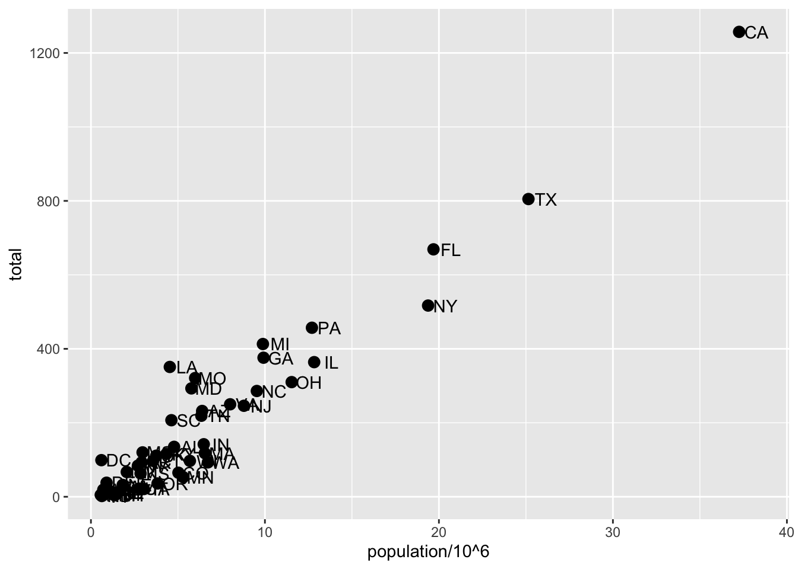
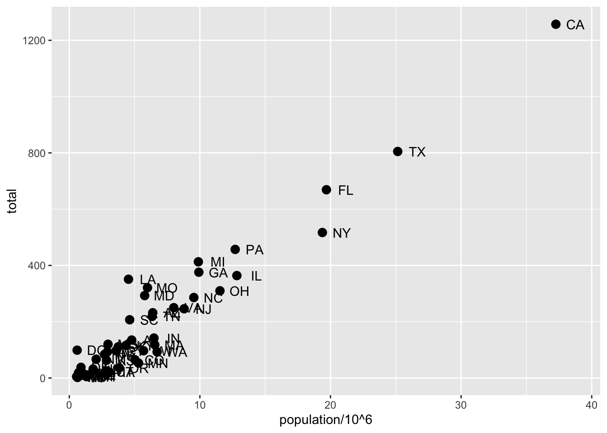
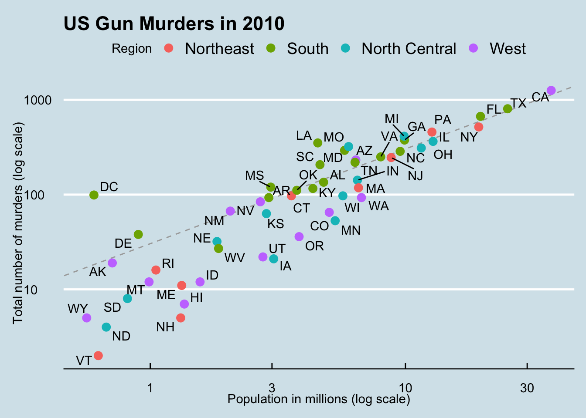
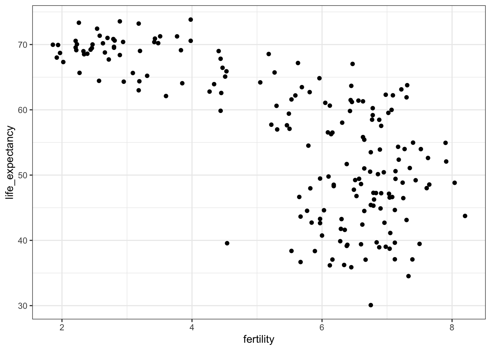
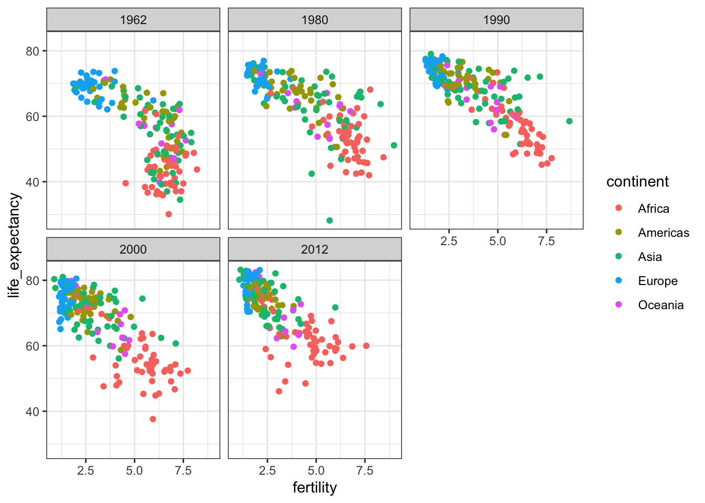
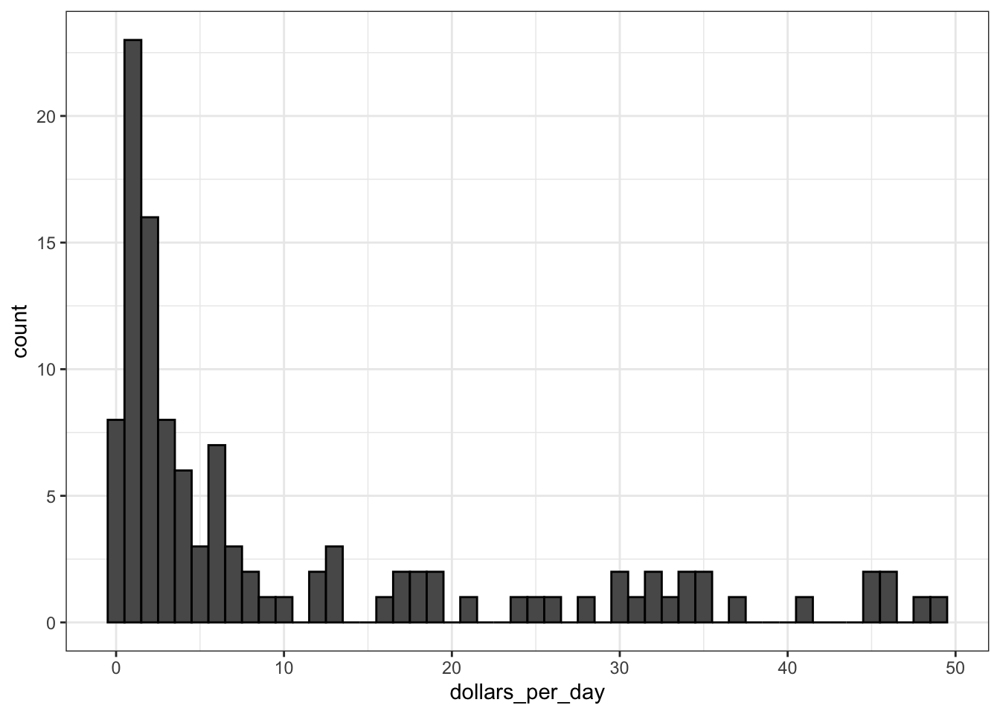
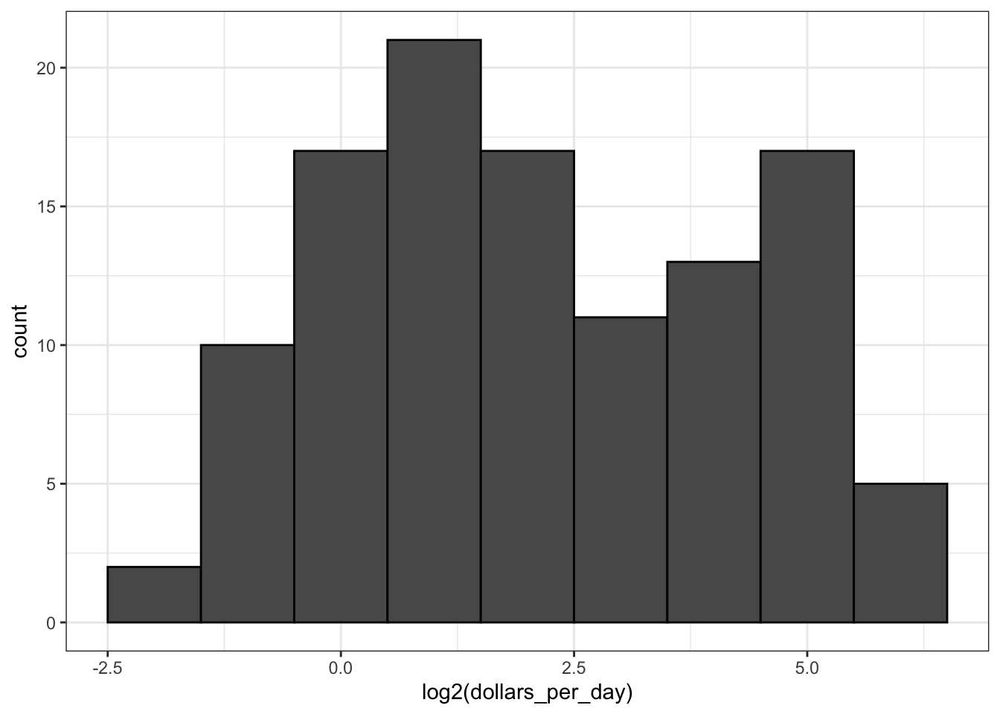
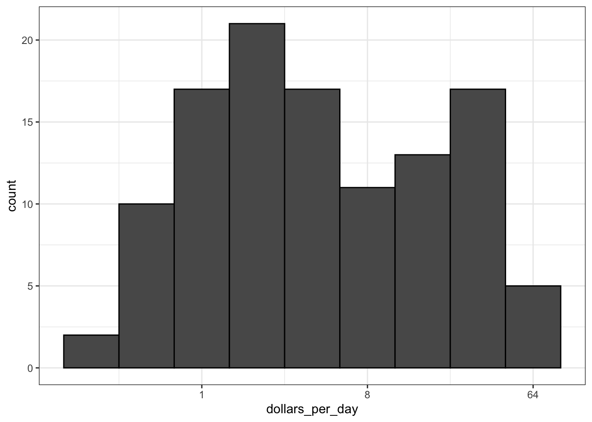
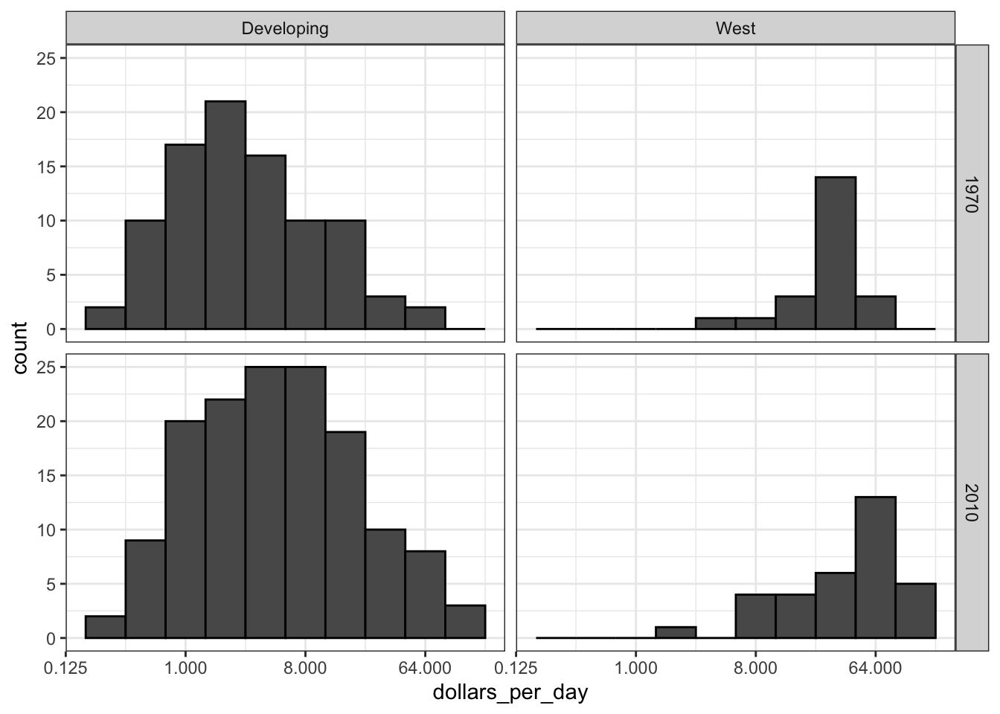
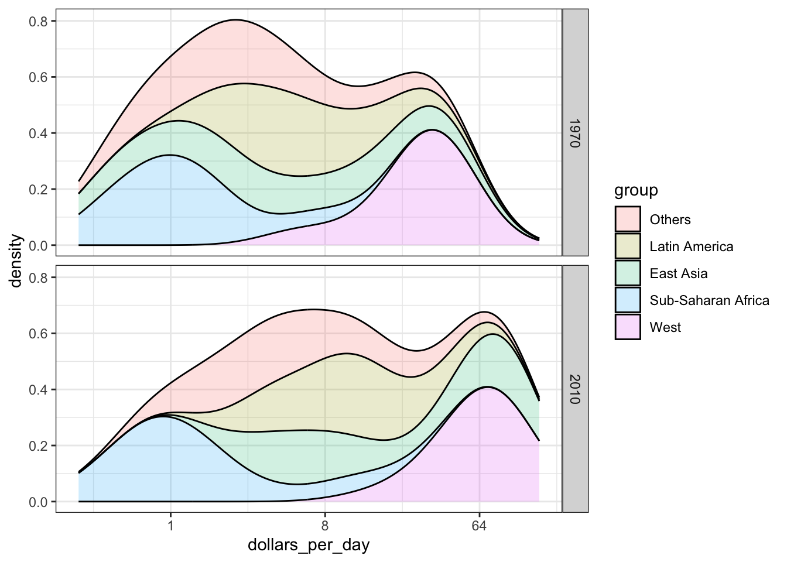

state abb region population total
1 Alabama AL South 4779736 135
2 Alaska AK West 710231 19
3 Arizona AZ West 6392017 232
4 Arkansas AR South 2915918 93
5 California CA West 37253956 1257
6 Colorado CO West 5029196 65Data Visualization
Data Science
Data Visualization
Data Science-Data Visualization
1 Welcome!
1.1 What is data visualization?
Data visualization is the graphical representation of information and data. By using visual elements like charts, graphs, and maps, data visualization tools provide an accessible way to see and understand trends, outliers, and patterns in data. Additionally, it provides an excellent way for employees or business owners to present data to non-technical audiences without confusion.
In the world of Big Data, data visualization tools and technologies are essential to analyze massive amounts of information and make data-driven decisions.
2 Introduction to Data Visualization and Distributions
2.1 Overview
After completing this section, we will:
understand the importance of data visualization for communicating data-driven findings.
be able to use distributions to summarize data.
be able to use the average and the standard deviation to understand the normal distribution
be able to access how well a normal distribution fit the data using a quantile-quantile plot.
be able to interpret data from a box plot
2.2 Introduction to Data Visualization
2.2.1 Key Point:
Plots of data easily communicate information that is difficult to extract from table of raw values.
Data visualization is a key component of exploratory data analysis (EDA), in which the properties of data are explored through visualization and summarization techniques.
Data visualization can help discover biases, systematic errors, mistakes and other unexpected problems in data before those data are incorporated into potentially flawed analysis.
Basics of data visualization and EDA will be covered in R by using the ggplot2 package and motivating examples from world health, economics and infections disease.
2.2.2 Code:
2.3 Introduction to Distributions
2.3.1 Key Points:
The most basic statistical summary of a list of object is its distribution.
We will learn ways to visualize and analyze distributions in the upcoming videos.
In some cases, data can be summarized by two-number summary: the average and standard deviation.I will learn to use data visualization to determine when that is appropriate.
2.3.2 Data Types
In R, there are 6 basic data types:
logicalnumericintegercomplexcharacterraw
Important
Categorical data are variables that are defined by a small number of groups.
Ordinal categorical data have an inherent order to the categories (mild/medium/hot, for example).
Non-ordinal categorical data have no order to the categories.
Important
Numerical data take a variety of numeric values.
Continuous variables can take any value.
Discrete variables are limited to sets of specific values.
flowchart LR
A[Main variable types] --> B{Catrgorical}
A[Main variable types] --> C{Numeric}
B{Catrgorical} --> D[ordinal]
B{Catrgorical} --> E[non-ordinal]
C{Numeric} --> F[continuous]
C{Numeric} --> G[discrete]
2.3.3 Exercise
2.4 Describe Heights to ET
2.4.1 key point:
- A distribution is a function or description that shows the possible values of a variable and how often those values occur.
- For categorical variables, the distribution describes the proportions of each category.
- A frequency table is the simplest way to show a categorical distribution. Use
prop.table()to convert a table of counts to a frequency table. Barplots display the distribution of categorical variables and are a way to visualize the information in frequency tables. - For continuous numerical data, reporting the frequency of each unique entry is not an effective summary as many or most values are unique. Instead, a distribution function is required.
- The cumulative distribution function (CDF) is a function that reports the proportion of data below a value a for all values of a :F(a)=Pr(xa).
- The proportion of observations between any two values a and b can be computed from the CDF as F(b)-F(a).
- A histogram divides data into non-overlapping bins of the same size and plots the counts of number of values that fall in that interval.
2.4.2 Code:
R -
table() .2.5 Cumulative Distribution Function
Every continuous distribution has cumulative distribution function (CDF). The CDF defines the proportion of the data below a given value for all values of a :

As defined above, this plot of the CDF for male heights has height value a on the x-axis and the proportion of student with heights of that value or lower(F(a)) on the y-axis.
The CDF is essential for calculating probabilities related to continuous data. In a continuous dataset, the probability of a specific exact value is not informative because most entries are unique. For example, in the student heights data, only one individual reported a height of 68.8976377952726 inches, but many students rounded similar heights to 69 inches. If we computed exact value probabilities, we would find that being exactly 69 inches is much more likely than being a non-integer exact height, which does not match our understanding that height is continuous. We can instead use the CDF to obtain a useful summary, such as the probability that a student is between 68.5 and 69.5 inches.
For datasets that are not normal, the CDF can be calculated manually by defining a function to compute the probability above. This function can then be applied to a range of values across the range of the dataset to calculate a CDF. Given a datasetmy_data, the CDF can be calculated and plotted like this:
2.5.1 Code for CDF:
2.5.2 Code for student height:
# example for student heights
a <- seq(min(heights$height), max(heights$height), length = 100)
cdf_function <- function(x){
mean(heights$height <= x)
}
cdf_value <- sapply(a, cdf_function)
plot(a, cdf_value)
The CDF defines that proportion of data below a cut-off a. To define the proportion of values above a, we compute: 1-F(a)
To define the proportion of values between a and b, we compute: F(b)-F(a)
Note that the CDF can help compute probabilities. The probability of observing a randomly chosen value between a and b is equal to the proportion of values between a and b, which we compute with the CDF.
2.6 Smooth Density Plots
2.6.1 Key Point:
A further note on histograms
The choice of binwidth has a determinative effect on sharp. There is no correct choice for binwidth, and you can sometimes gain insights into the data by experimenting with binwidths.
Smooth density plots can be thought of as histograms where the binwidth is extremely or infinitely small. The smoothing function makes estimates of the true continuous trend of the data given the available sample of data points.
The degree of smoothness can be controlled by an argument in the plotting function.
While the histogram is an assumption-free summary, the smooth density plot is shaped by assumptions and choices you make as a data analyst.
The y-axis is scaled so that the area under the density curve sums to 1. This means that interpreting value on the y-axis is not straightforward. To determine the proportion of data in between two values, compute the area under the smooth density curve in the region between those values.
An advantage of smooth densities over histograms is that densities are easier to compare visually.
2.7 Normal Distribution
2.7.1 Key Points:
-
- is centered around one value, the mean
- is symmetric() around the mean.
- is defined completely by its mean(\mu) and standard deviation(\sigma)
- Always has the same proportion of observations within a given distance of the mean (for example, 95% with 2\sigma)
The standard deviation is the average distance between a value and the mean value.
Calculate the mean using the
mean()function.Calculate the standard deviation using the
sd()function or manually.-
Standard units describe how many standard deviations a value is away from the mean. The z-score, or number of standard deviation an observation is away from the mean \mu:
z = (x-\mu)/\sigma
Computer standard units with the
scale()function.Important: to calculate the proportion of value that meet a certain condition, use the
meanfunction on a logical vector. BecauseTRUEis converted to 1 andFALSEis converted to 0, taking the mean of this vector yields the proportion ofTURE.
2.8 Equation for the normal distribution
The normal distribution is mathematically defined by the following formula for any mean \mu and standard deviation \sigma:
Pr(a < x < b) = \int_{a}^b\frac{1}{\sqrt{2\pi\mu}}{e}^{-\frac{1}{2}(\frac{x-\mu^2}{\sigma})}dx
When standard unites z=0, the normal distribution is at a maximum, the mean \mu. The function is defined to be symmetric around z=0.
The normal distribution of z-score is called the standard normal distribution and is defined by \mu=0 and \sigma=1.
Z-score are useful to quickly evalute whether an observation is average or extreme. Z-scores near 0 are average. Z-score above 2 or below -2 are significantly above or blew the mean, and z-scores above 3 or below -3 are extrmely rate.
2.8.1 Code:
# define x as vector of male heights
library(tidyverse)
library(dslabs)
data(heights)
index <- heights$sex=="Male"
x <- heights$height[index]
# calculate the mean and standard deviation manually
average <- sum(x)/length(x)
SD <- sqrt(sum((x-average)^2)/length(x))
# built-in mean and sd functions - note that the audio and printed value disagree
average <- mean(x)
SD <- sd(x)
c(average = average, SD = SD)
# calculate standard units
z <- scale(x)
# calculate proportion of value within 2 SD of mean
mean(abs(z) < 2)function
sd():The built-in R function sd() calculates the standard deviation, but it divides by length(x)-1 instead of length(x). When the length of the list is large, this difference is negligible and you can use the built-in sd() function. Otherwise, you should compute by hand. For this course series, assume that you should use the sd() function unless you are told not to do so.Here we will learn more about benchmark z-score value and their corresponding probabilities.
2.8.2 The 68-95-99.7 Rule
The normal distribution is associated with the 68-95-99.7 rule. This rule describes the probability of observing events within a ceration number of standard deviations of the mean.

The probability distribution function for the normal distribution is defined such that:
- About 68% of observations will be within one standard deviation of the mean(\mu\pm\sigma). In standard units, this is equivalent to a z-score of |z|\leq2

- About 95% of observations will be within two standard seviations of the mean(\mu\pm2\sigma). In standard units, this is equivalent to a z-sore of |z|\leq2.

- About 99.7% of observations will be within three standard deviations of the mean(\mu\pm3\sigma). In standard units, this is equivalent to a z-score of |z|\leq3.

2.9 The Normal CDF and pnorm
2.9.1 Key points:
The normal distribution has a mathematically defined CDF which can be computed in R with the function
pnorm.pnom(a, avg, s)gives the value of the cumculative distribution function F(a) for the normal distribution defined by average avg and standard deviation s.we say that a random quantity is normally distributed with average avg and standard deviation s if the approximate pnorm(a, avg, s) holds for all values of a.
If we are willing to use the normal approximation for height, we can estimate the distribution simply from the mean and standard deviation of our values.
If we treat the height data as discrete rather than categorical, we see that the data are not very useful because integer values are more common that expected due to rounding. This is called discretization.
With rounded data, the normal approximation is particularly useful when computing probabilities of intervals of length 1 that include exactly over integer.
2.9.2 Code: Using pnorm to calculate probabilities
Given male heights x:
we can estimate the probability that a male is taller than 70.5 inches with:
2.9.3 Code: Discretization and the normal approximation
# plot distribution of exact heights in data
plot(prop.table(table(x)), xlab = "a = Height in inches", ylab = "Pr(x = a)")
# probabilities in actual data over length 1 ranges containing a integer
mean(x <= 68.5) - mean(x <= 67.5)
mean(x <= 69.5) - mean(x <= 68.5)
mean(x <= 70.5) - mean(x <= 69.5)
# probabilities in normal approximation match well
pnorm(68.5, mean(x), sd(x)) - pnorm(67.5, mean(x), sd(x))
pnorm(69.5, mean(x), sd(x)) - pnorm(68.5, mean(x), sd(x))
pnorm(70.5, mean(x), sd(x)) - pnorm(69.5, mean(x), sd(x))
# probabilities in actual data over other ranges don't match normal approx as well
mean(x <= 70.9) - mean(x <= 70.1)
pnorm(70.9, mean(x), sd(x)) - pnorm(70.1, mean(x), sd(x))2.10 Definition of quantiles
2.10.1 Definition of quantiles
Quantiles are cut off points that divide a dataset into intervals with set probability. The qth quantile is the value at which q% of the observation are equal to or less than that value.
2.10.2 Using the quantile function
Given a dataset data and desired quantile q, you can find the q the quantile of data with:
2.10.3 Percentiles
Percentiles are the quantiles that divide a dataset into 100 intervals each with 1% probability. You can determine all percentiles of a dataset data like this:
2.10.4 Quartiles
Quartiles divide a dataset into 4 parts each with 25% probability. They are equal to the 25th, 50th and 75th percentiles. The 25th percentile is also known as the 1st quartile, the 50th percentile is also konwn as the median, and the 75th percentile is also knowns as the 3rd quartile.
The summary() function returns the minimum, quartiles and maximum of a vector.
2.10.5 Examples
Load the heights dataset from the dslabs package:
Usesummaryon the heights$height variable to find the quartiles:
Find the percentiles of height$height:
Confirm that the 25th and 75th percentiles match that 1st and 3rd quartiles. Note that quantile() returns a named vector. You can access the 25th and 75th percentiles like this (adapt the code for other percentile value):
2.11 Finding quantile with qnorm
2.11.1 Definiton of qnorm
,
qnorm(CDF) pnorm, qquantile, The qnorm() function gives the theoretical value of a quantile with probability p of observing a value equal to or less than that quantile value a normal distribution with mean mu and standard deviation sigma:
By default, mu=0 and sigma=1. Therefore, calling qnorm() with no arguments gives quantiles for the standard normal distribution.
Recall that quantiles are defined such that p is the probability of a random observation less than or equal to the quantile.
2.11.2 Realation to pnorm
The pnorm() function gives the probability that a value from a standard normal distribution will be less than or equal to a z-score value z. consider: pnorm(-1.96)\approx0.025 The result of pnorm() is the quantile. Note that: qnorm(0.025)\approx-1.96 qnorm() and pnorm are inverse functions: pnorm(qnorm(0.025))\equiv0.025
2.11.3 Theoretical quantiles
You can use qnorm() to determine the theoretical quantiles of a dataset: that is, the theoretical value of quantiles assuming that a dataset follows a normal distribution. Run the qnorm() function with the desired probabilities p, mean mu and standard deviation sigma.
Suppose male heights follow a normal distribution with a mean of 69 inches and standard deviation of 3 inches. The theoretical quantiles are:
Theoretical quantiles can be compared to sample quantiles determined with the quantile function in order to evaluate whether the sample follows a normal distribution.
2.12 Quantile-Quantile Plots
2.12.1 Key Points:
Quantile-quantile plots, or QQ-plot, are used to check whether distributions are well-approximated by a normal distribution.
Given a proportion p, the quantile q is the value such that the proportion of values in the data blew q is p.
In a QQ-plot, the sample quantiles in the observed data are compared to the theoretical quantiles expected from the normal distribution. If the data are well-approximated by the normal distribution, then the points on the QQ-plot will fall near the identity line(sample = theoretical).
Calculate sample quantiles (observed quantiles) using the
quantile()function.Calculate theoretical quantiles with the
qnorm()function.qnorm()will caculate quantiles for the standard normal distribution (\mu=0, \sigma=1) by default, but it can calculate quantiles for any normal distribution givenmean()andsd()arguments.
2.12.2 Code:
# define x and z
library(tidyverse)
library(dslabs)
data(heights)
index <- heights$sex=="Male"
x <- heights$height[index]
z <- scale(x)
# proportion of data below 69.5
mean(x <= 69.5)[1] 0.5147783# calculate observed and theoretical quantiles
p <- seq(0.05, 0.95, 0.05)
observed_quantiles <- quantile(x, p)
theoretical_quantiles <- qnorm(p, mean = mean(x), sd = sd(x))
# make QQ-plot
plot(theoretical_quantiles, observed_quantiles)
abline(0,1)# make QQ-plot with scaled values
observed_quantiles <- quantile(z, p)
theoretical_quantiles <- qnorm(p)
plot(theoretical_quantiles, observed_quantiles)
abline(0,1)
2.13 Percentiles
2.13.1 Key Points:
Percentiles are the quantiles obtained when defining p as 0.01, 0.02,,0.99. They summarize the values at which a certain percent of the observations are equal to or less than that value.
The 50th percentile is also known as the median.
The quartiles are the 25th, 50th and 75th percentiles.
2.14 Boxplots
2.14.1 Key Points:
When data do not follow a normal distribution and cannot be succinctly summarized by only the mean and standard deviation, an alternative is to report a five-number summary: range (ignoring outliers) and the quartiles (25th, 50th, 75th percentile).
In a boxplot, the box is defined by the 25th and 75th percentiles and the median is a horizontal line through the box. The whiskers show the range excluding outliers, and outliers are plotted separately as individual points.
The interquartile range is the distance between the 25th and 75th percentiles.
Boxplots are particularly useful when comparing multiple distributions.
2.15 Distribution of Female Heights
2.15.1 Key Points:
If a distribution is not normal, it cannot be summarized with only the mean and standard seviation. Provide a histogram, smooth density or boxplot instead.
A plot can force us to see unexpected results that make us question the quality or implication of our data.
3 Introduction to ggplot2
3.1 Overview
After completing ggplot2, we will:
be able to use ggplot2 to create data visualizations in R.
be able to explain what the data component of a graph is.
be able to identify the geometry component of a graph and know when to use which type of geometry. be able to explain what the aesthetic mapping component of a graph is.
be able to understand the scale component of a graph and select an appropriate scale component to use.
3.2 ggplot
3.2.1 ggplot2
3.2.2 key Points:
Throughout the series, we will create plots with the ggplot2 package. ggplot2 is part of the tidyverse suite of package, which you can load with
library(tidyverse).Note that you can also load ggplot2 alone using the command
library(ggplot2), instead of loading the entire tidyverse.ggplot2 uses a grammar of graphics to break plots into building blocks that have intuitive syntax, making it easy to create relatively complex and aesthetically pleasing plots with relatively simple and readable code.
ggplot2 is designed to work excusively with tidy data (rows are observations and columns are variables).
3.3 Graph Components
3.3.1 Key Points:
- Plots in ggplot2 consist of 3 main components:
- Data: The dataset being summarized
- Geometry: The type of plot(scatterplot, boxplot, barplot, histogram, qqplot, smooth desity, etc.)
- Aesthetic mapping: Variable mapped to visual cues, such as x-axis and y-axis values and color.
3.3.2 Code:
3.4 Creating a New Plot
3.4.1 Key Points:
-
You can associated a dataset
xwith a ggplot object with any of the 3 commands:ggplot(data = x)ggplot(x)x %>% ggplot()
You can assign a ggplot object to a variable. If the object is not assigned to a variable, it will automatically be displayed.
You can display a ggplot object assigned to a variable by printing that variable.
Code:
3.5 Layers
3.5.1 Key Points:
In ggplot2, graphs are created by adding layers to the ggplot object: DATA %>% ggplot() + LAYER_1 + LAYER_2 + + LAYER_N
The geometry layer defines that plot type and takes the format
geom_xwherexis the plot type.Aesthetic mappings describe how properties of the data connect with features of the graph (axis position, color, size, etc.) define aesthetic mapping with
aes()function.aes()uses variable names from the object component (for example,totalrather thanmurders$total).geom_point()creates a scatterplot and requiresxandyaesthetic mappings.geom_text()andgeom_labeladd text to a scatterplot and requirex,y, andlabelaesthetic mappings.To determine which aesthetic mappings are required for a geometry, read the help file for that geometry.
You can add layers with different aesthetic mappings to the same graph.
Code: Adding layers to a plot
# add points layer to predefined ggplot object
p <- ggplot(data = murders)
p + geom_point(aes(population/10^6, total))
# add text layer to scatterplot
p + geom_point(aes(population/10^6, total)) +
geom_text(aes(population/10^6, total, label = abb))
Code: Example of aes behavior
3.6 Thinkering
3.6.1 Key Points:
You can modify arguments to geometry functions others than
aes()and the data.These arguments are not aesthetic mappings: the affect all data points the same way.
Global aesthetic mappings apply to all geometries and can be defined when you initially call
ggplot(). All the geometries added as layers will default to this mapping. Local aesthetic mapping add additional information or override the default mappings.
Nudge points a fixed distance
position_nudge(x = 0, y = 0) is generally useful for adjusting the position of items on discrete scales by a small amount. Nudging is built in to geom_text() because its so useful for moving labels a small distance from what theyre labeling.
Code:
# change the size of the points
p + geom_point(aes(population/10^6, total), size = 3) +
geom_text(aes(population/10^6, total, label = abb))# move text labels slightly to the right
p + geom_point(aes(population/10^6, total), size = 3) +
geom_text(aes(population/10^6, total, label = abb), nudge_x = 1)
# simplify code by adding global aesthetic
p <- murders %>% ggplot(aes(population/10^6, total, label = abb))
p + geom_point(size = 3) +
geom_text(nudge_x = 1.5)
# local aesthetics override global aesthetics
p + geom_point(size = 3) +
geom_text(aes(x = 10, y = 800, label = "Hello there!"))
3.7 Scales, Labels, and Colors
3.7.1 Textbook links:
3.7.2 Key Points:
Convert the x-axis to log scale with
scale_x_continuous(trans = "log10")orscale_x_log10(). Similar function exist for the y-axis.Add axis title with
xlab()andylab()function. Add a plot title with theggtitle()function.Add a color mapping that colors points by a varaibale by defining
colargument withinaes(). To color all pints the same way, definecoloutside ofaes().Add a line with the
geom_abline()geometry.geom_abline()takes argumentsslop(default = 1) andintercept(default = 0). Change the color withcolorcolorand line type withlty.Placing the line layer after the point layer will overlay the the line on top of the points. To overlay points on the line, place the line layer before the point layer.
There are many additional ways to tweak your graph that can be found in the ggplot2 documentation, cheat sheet or on the internet. For example, you can change the legend title with
scale_color_discrete.
3.7.3 Code: Log-scale the x-axis and y-axis

3.7.4 Code: Add labels and title
3.7.5 Code: Change color of the points
# redefine p to be everything except the points layer
p <- murders %>%
ggplot(aes(population/10^6, total, label = abb)) +
geom_text(nudge_x = 0.075) +
scale_x_log10() +
scale_y_log10() +
xlab("Population in million(log scale)") +
ylab("Total number of murders(log scale)") +
ggtitle("US Gun Murders in 2010")

3.7.6 Code: Add a line with average murder rate
r <- murders %>%
summarize(rate = sum(total) / sum(population) * 10^6) %>% pull(rate)
p <- p + geom_point(aes(col = region), size = 3) +
geom_abline(intercept = log10(r)) # slop is default of 1
# change line to dashed and dark grey, line under points
p + geom_abline(intercept = log(r), lty = 2, color = "darkgrey") +
geom_point(aes(col = region), size = 3)
Line types in R: Ity
The different line types available in R are shown in the figure hereafter. The argument lty can be used to specify the line type. To change line width, the argument lwd can be used.
3.7.7 Code: Change legend title
3.8 Add-on packages
3.8.1 Textbook links:
3.8.2 Key Points
The style of a ggplot graph can be changed using the
theme()function.The
ggthemespackage adds additional themes.The
ggrepelpackage includes a geometry that repels text labels, ensuring they do not overlap with each other:geom_text_repel().
3.8.3 Code: Adding themes

3.8.4 Code: Putting it all together to assemble the plot
# define the intercept
r <- murders %>%
summarize(rate = sum(total) / sum(population) * 10^6) %>%
.$rate
# make the plot, combining all elements
murders %>%
ggplot(aes(population/10^6, total, label = abb)) +
geom_abline(intercept = log10(r), lty = 2, color = "darkgrey") +
geom_point(aes(col = region), size = 3) +
geom_text_repel() +
scale_x_log10() +
scale_y_log10() +
xlab("Population in millions (log scale)") +
ylab("Total number of murders (log scale)") +
ggtitle("US Gun Murders in 2010") +
scale_color_discrete(name = "Region") +
theme_economist()
3.9 Other Examples
3.9.1 Textbook links:
3.9.2 Key points
geom_histogram()creates a histogram. Use the binwidth argument to change the width of bins, the fill argument to change the bar fill color, and the col argument to change bar outline color.geom_density()creates smooth density plots. Change the fill color of the plot with the fill argument.geom_qq()creates a quantile-quantile plot. This geometry requires the sample argument. By default, the data are compared to a standard normal distribution with a mean of 0 and standard deviation of 1. This can be changed with the dparams argument, or the sample data can be scaled.Plots can be arranged adjacent to each other using the
grid.arrange()function from the gridExtra package. First, create the plots and save them to objects (p1, p2, ). Then pass the plot objects togrid.arrange().
3.9.3 Code: Histograms in ggplot2


3.9.4 Code: Smooth density plots in ggplot2
3.9.5 Code: Quantile-quantile plots in ggplot2
# basic QQ-plot
p <- heights %>% filter(sex == "Male") %>%
ggplot(aes(sample = height))
p + geom_qq()# QQ-plot against a normal distribution with same mean/sd as data
params <- heights %>%
filter(sex == "Male") %>%
summarize(mean = mean(height), sd = sd(height))
p + geom_qq(dparams = params) +
geom_abline()
# QQ-plot of scaled data against the standard normal distribution
heights %>%
ggplot(aes(sample = scale(height))) +
geom_qq() +
geom_abline()

4 Gapminder
4.1 Overview
After completing Gapminder, you will: - understand how Hans Rosling and the Gapminder Foundation use effective data visualization to convey data-based trends.
be able to apply the ggplot2 techniques from the previous section to answer questions using data.
understand how fixed scales across plots can ease comparisons.
be able to modify graphs to improve data visualization.
4.2 Introduction to Gapminder
Case study: Trends in World Health and Economics
Data Source form Gapminder
We will use this data to answer the following questions about World Health and Economics: - Is it still fair to consider the world as divided into the West and the developing world? - Has income inequality across countries worsened over the last 40 years?
4.3 Gapminder Dataset
4.3.1 Key Points
A selection of world health and economics statistics from the Gapminder project can be found in the
dslabspackage as data(gapminder).Most people have misconceptions about world health and economics, which can be addressed by considering real data.
4.3.2 Code
country year infant_mortality life_expectancy fertility
1 Albania 1960 115.40 62.87 6.19
2 Algeria 1960 148.20 47.50 7.65
3 Angola 1960 208.00 35.98 7.32
4 Antigua and Barbuda 1960 NA 62.97 4.43
5 Argentina 1960 59.87 65.39 3.11
6 Armenia 1960 NA 66.86 4.55
population gdp continent region
1 1636054 NA Europe Southern Europe
2 11124892 13828152297 Africa Northern Africa
3 5270844 NA Africa Middle Africa
4 54681 NA Americas Caribbean
5 20619075 108322326649 Americas South America
6 1867396 NA Asia Western Asia[1] "country" "year" "infant_mortality" "life_expectancy"
[5] "fertility" "population" "gdp" "continent"
[9] "region" 4.4 Life Expectancy and Fertility Rates
4.4.1 Key Points
-
A prevalent worldview is that the world is divided into two groups of countries:
Western world: high life expectancy, low fertility rate
Developing world: lower life expectancy, higher fertility rate
Gapminder data can be used to evaluate the validity of this view.
A scatterplot of life expectancy versus fertility rate in 1962 suggests that this viewpoint was grounded in reality 50 years ago. Is it still the case today?
4.4.2 Code
# basic scatterplot of life expectancy versus fertility
ds_theme_set() # set plot theme
filter(gapminder, year == 1962) %>%
ggplot(aes(fertility, life_expectancy)) +
geom_point()
# add color as continent
filter(gapminder, year == 1962) %>%
ggplot(aes(fertility, life_expectancy, color = continent)) +
geom_point()
4.5 Faceting
4.5.1 Key Points
Faceting makes multiple side-by-side plots stratified by some variable. This is a way to ease comparisons.
The
facet_grid()function allows faceting by up to two variables, with rows faceted by one variable and columns faceted by the other variable. To facet by only one variable, use the dot operator as the other variable.The
facet_wrap()function facets by one variable and automatically wraps the series of plots so they have readable dimensions.Faceting keeps the axes fixed across all plots, easing comparisons between plots.
The data suggest that the developing versus Western world view no longer makes sense in 2012.
4.5.2 Code
# facet by continent and year
filter(gapminder, year %in% c(1962, 2012)) %>%
ggplot(aes(fertility, life_expectancy, col = continent)) +
geom_point() +
facet_grid(continent ~ year)# facet by year only
filter(gapminder, year %in% c(1962, 2012)) %>%
ggplot(aes(fertility, life_expectancy, col = continent)) +
geom_point() +
facet_grid(. ~ year)# facet by year, plots wrapped onto multiple rows
years <- c(1962, 1980, 1990, 2000, 2012)
continents <- c("Europ", "Asia")
gapminder %>%
filter(year %in% years & continent %in% continent) %>%
ggplot(aes(fertility, life_expectancy, col = continent)) +
geom_point() +
facet_wrap(. ~ year)
4.6 Time Series Plots
4.6.1 Key Points
Time series plots have time on the x-axis and a variable of interest on the y-axis.
The
geom_line()geometry connects adjacent data points to form a continuous line. A line plot is appropriate when points are regularly spaced, densely packed and from a single data series.You can plot multiple lines on the same graph. Remember to group or color by a variable so that the lines are plotted independently.
Labeling is usually preferred over legends. However, legends are easier to make and appear by default. Add a label with
geom_text(), specifying the coordinates where the label should appear on the graph.
4.6.2 Code: Single Time Series

4.6.3 Code: Multiple Time Series
# line plot fertility time series for two countries- only one line (incorrect)
countries <- c("South Korea", "Germany")
gapminder %>% filter(country %in% countries) %>%
ggplot(aes(year, fertility)) +
geom_line()
# line plot fertility time series for two countries - one line per country
gapminder %>% filter(country %in% countries) %>%
ggplot(aes(year, fertility, group = country)) +
geom_line()
# fertility time series for two countries - lines colored by country
gapminder %>% filter(country %in% countries) %>%
ggplot(aes(year, fertility, col = country)) +
geom_line()4.6.4 Code: Adding text labels to a plot
Note
labels data frame as the data to ensure where to start label text 
# life expectancy time series - lines colored by country and labeled, no legend
labels <- data.frame(country = countries, x = c(1975, 1965), y = c(60, 72))
gapminder %>% filter(country %in% countries) %>%
ggplot(aes(year, life_expectancy, col = country)) +
geom_line() +
geom_text(data = labels, aes(x, y, label = country), size = 5) +
theme(legend.position = "none")
4.7 Transformations
4.7.1 Key Points
We use GDP data to compute income in US dollars per day, adjusted for inflation.
Log transformations covert multiplicative changes into additive changes.
common transformations are the log base 2 transformation and the log base 10 transformation. The choice of base depends on the range of the data. The natural log is not recommended for visualization because it is difficult to interpret.
The mode of a distribution is the value with the highest frequency. The mode of a normal distribution is the average. A distribution can have multiple local modes.
There are two ways to use log transformations in plots: transform the data before plotting or transform the axes of the plot. Log scales have the advantage of showing the original values as axis labels, while log transformed values ease interpretation of intermediate values between labels.
Scale the x-axis using
scale_x_continuous()orscale_x_log10()layers in ggplot2. Similar functions exist for the y-axis.In 1970, income distribution is bimodal, consistent with the dichotomous Western versus developing worldview.
4.7.2 Code
# add dollars per day variable
gapminder <- gapminder %>%
mutate(dollars_per_day = gdp/population/365)
# histogram of dollars per day
past_year <- 1970
gapminder %>%
filter(year == past_year & !is.na(gdp)) %>%
ggplot(aes(dollars_per_day)) +
geom_histogram(binwidth = 1, color = "black")
# repeat histogram with log2 scaled data
gapminder %>%
filter(year == past_year & !is.na(gdp)) %>%
ggplot(aes(log2(dollars_per_day))) +
geom_histogram(binwidth = 1, color = "black")
# repeat histogram with log2 scaled x-axis
gapminder %>%
filter(year == past_year & !is.na(gdp)) %>%
ggplot(aes(dollars_per_day)) +
geom_histogram(binwidth = 1, color = "black") +
scale_x_continuous(trans = "log2")
4.8 Stratify and Boxplot
4.8.1 Key Points
Make boxplots stratified by a categorical variable using the
geom_boxplot()geometry.Rotate axis labels by changing the theme through
element_text(). You can change the angle and justification of the text labels.Consider ordering your factors by a meaningful value with the
reorderfunction, which changes the order of factor levels based on a related numeric vector. This is a way to ease comparisons.Show the data by adding data points to the boxplot with a
geom_pointlayer. This adds information beyond the five-number summary to your plot, but too many data points it can obfuscate your message.
4.8.2 Code: Boxplot of GDP by region
# add dollars per day variable
gapminder <- gapminder %>%
mutate(dollars_per_day = gdp/population/365)
# number of regions
length(levels(gapminder$region))[1] 22# boxplot of GDP by region in 1970
past_year <- 1970
p <- gapminder %>%
filter(year == past_year & !is.na(gdp)) %>%
ggplot(aes(region, dollars_per_day))
p + geom_boxplot()
# roation name on x-axis
p + geom_boxplot() +
theme(axis.text.x = element_text(angle = 90, hjust = 1))4.8.3 Code: The reorder function
4.8.4 Code: Enhanced boxplot ordered by median income, scaled, and showing data
# reorder by median income and color by continent
p <- gapminder %>%
filter(year == past_year & !is.na(gdp)) %>%
mutate(region = reorder(region, dollars_per_day, FUN = median)) %>% # reorder
ggplot(aes(region, dollars_per_day, fill = continent)) + # color by continent
geom_boxplot() +
theme(axis.text.x = element_text(angle = 90, hjust = 1)) +
xlab("")
p


4.9 Comparing Distributions
Important
4.9.1 Key Points
- Use
intersectto find the overlap between two vectors. - To make boxplots where grouped variables are adjacaent, color the boxplot by a factor instead of faceting by that factor. This is a way to ease comparisions.
- The data suggest that the income gap between rich and poor countries has narrowed, not expended.
4.9.2 Code: Histogram of income in West versus developing world, 1970 and 2010
# add dollars per day variable and define past year
gapminder <- gapminder %>%
mutate(dollars_per_day = gdp/population/365)
past_year <- 1970
# define Western countries
west <- c("Western Europe", "Northern Europe", "Southern Europe", "Northern America", "Australia and New Zealand")
# facet by West vs Devloping
gapminder %>%
filter(year == past_year & !is.na(gdp)) %>%
mutate(group = ifelse(region %in% west, "West", "Developing")) %>%
ggplot(aes(dollars_per_day)) +
geom_histogram(binwidth = 1, color = "black") +
scale_x_continuous(trans = "log2") +
facet_grid(. ~group)# facet by West/Developing and year
present_year <- 2010
gapminder %>%
filter(year %in% c(past_year, present_year) & !is.na(gdp)) %>%
mutate(group = ifelse(region %in% west, "West", "Developing")) %>%
ggplot(aes(dollars_per_day)) +
geom_histogram(binwidth = 1, color = "black") +
scale_x_continuous(trans = "log2") +
facet_grid(year ~ group)
4.9.3 Code: Income distribution of West verseus Developing world, only countries with data
# define countries that have data available in both years
country_list_1 <- gapminder %>%
filter(year == past_year & !is.na(dollars_per_day)) %>% .$country
country_list_2 <- gapminder %>%
filter(year == present_year & !is.na(dollars_per_day)) %>% .$country
country_list <- intersect(country_list_1, country_list_2)
# make histogram including only countries with data availabe in both years
gapminder %>%
filter(year %in% c(past_year, present_year) & country %in% country_list) %>% # keep only selected countries
mutate(group = ifelse(region %in% west, "West", "Developing")) %>%
ggplot(aes(dollars_per_day)) +
geom_histogram(binwidth = 1, color = "black") +
scale_x_continuous(trans = "log2") +
facet_grid(year ~ group)4.9.4 Code: Boxplots of income in West versus Developing world, 1970 and 2010
p <- gapminder %>%
filter(year %in% c(past_year, present_year) & country %in% country_list) %>%
mutate(region = reorder(region, dollars_per_day, FUN = median)) %>%
ggplot() +
theme(axis.text.x = element_text(angle = 90, hjust = 1)) +
xlab("") + scale_y_continuous(trans = "log2")
p + geom_boxplot(aes(region, dollars_per_day, fill = continent)) +
facet_grid(year ~ .)
# arrange matching boxplots next to each other, colored by year
p + geom_boxplot(aes(region, dollars_per_day, fill = factor(year)))
4.10 Density Plots
4.10.1 Key Points
Change the y-axis of density plots to variable counts using
..count..as the y argument.The
case_when()function defines a factor whose levels are defined by a variety of logical operations to group data.Plot stacked density plots using
position="stack".Define a weight aesthetic mapping to change the relative weights of density plots-for example, this allow weighting of plots by population rather than number of countries.
4.10.2 Code: Faceted smooth density plots
# see the code below the previous video for variable definitions
# smooth density plots - area under each curve adds to 1
gapminder %>%
filter(year == past_year & country %in% country_list) %>%
mutate(group = ifelse(region %in% west, "West", "Developing")) %>% group_by(group) %>%
summarize(n = n()) %>% knitr::kable()| group | n |
|---|---|
| Developing | 87 |
| West | 21 |
# smooth density plots - variable counts on y-axis
p <- gapminder %>%
filter(year == past_year & country %in% country_list) %>%
mutate(group = ifelse(region %in% west, "West", "Developing")) %>%
ggplot(aes(dollars_per_day, y = ..count.., fill = group)) +
scale_x_continuous(trans = "log2")
p + geom_density(alpha = 0.2, bw = 0.75) + facet_grid(year ~ .)
4.10.3 Code: Add new region group with case_when
# add group as a factor, grouping regions
gapminder <- gapminder %>%
mutate(group = case_when(
.$region %in% west ~ "West",
.$region %in% c("Eastern Asia", "South-Eastern Asia") ~ "East Asia",
.$region %in% c("Caribbean", "Central America", "South America") ~ "Latin America",
.$continent == "Africa" & .$region != "Northern Africa" ~ "Sub-Saharan Africa", TRUE ~ "Others"))
# reorder factor levels
gapminder <- gapminder %>%
mutate(group = factor(group, levels = c("Others", "Latin America", "East Asia", "Sub-Saharan Africa", "West")))4.10.4 Code: Stacked density plot
# note you must redefine p with the new gapminder object first
p <- gapminder %>%
filter(year %in% c(past_year, present_year) & country %in% country_list) %>%
ggplot(aes(dollars_per_day, fill = group)) +
scale_x_continuous(trans = "log2")
# stacked density plot
p + geom_density(alpha = 0.2, bw = 0.75, position = "stack") +
facet_grid(year ~ .)
4.10.5 Code: Weighted stacked density plot
gapminder %>%
filter(year %in% c(past_year, present_year) & country %in% country_list) %>%
group_by(year) %>%
mutate(weight = population/sum(population*2)) %>%
ungroup() %>%
ggplot(aes(dollars_per_day, fill = group, weight = weight)) +
scale_x_continuous(trans = "log2") +
geom_density(alpha = 0.2, bw = 0.75, position = "stack") + facet_grid(year ~ .)
4.11 Ecological Fallacy
4.11.1 Textbook link
4.11.2 Key Points
The breaks argument allows us to set the location of the axis labels and tick marks.
the logistic or logit transformation is defined as f(p)=log\frac{1}{1-p}, or the log of odds. This scale is useful for highlighting difference near 0 or near 1 and converts fold changes into constant increase.
The ecological fallacy is assuming that conclusion made from the average of a group apply to all members of that group.
4.11.3 Code
# add additional cases
gapminder <- gapminder %>%
mutate(group = case_when(
.$region %in% west ~ "The West",
.$region %in% "Northern Africa" ~ "Northern Africa",
.$region %in% c("Eastern Asia", "South-Eastern Asia") ~ "East Asia",
.$region == "Southern Asia" ~ "Southern Asia",
.$region %in% c("Central America", "South America", "Caribbean") ~ "Latin America",
.$continent == "Africa" & .$region != "Northern Africa" ~ "Sub-Saharan Africa",
.$region %in% c("Melanesia", "Micronesia", "Polynesia") ~ "Pacific Islands"))
# define a data frame with group average income and average infant survival rate
surv_income <- gapminder %>%
filter(year %in% present_year & !is.na(gdp) & !is.na(infant_mortality) & !is.na(group)) %>%
group_by(group) %>%
summarize(income = sum(gdp)/sum(population)/365,
infant_survival_rate = 1 - sum(infant_mortality/1000*population)/sum(population))
surv_income %>% arrange(income)# A tibble: 7 3
group income infant_survival_rate
<chr> <dbl> <dbl>
1 Sub-Saharan Africa 1.76 0.936
2 Southern Asia 2.07 0.952
3 Pacific Islands 2.70 0.956
4 Northern Africa 4.94 0.970
5 Latin America 13.2 0.983
6 East Asia 13.4 0.985
7 The West 77.1 0.995# plot infant survival versus income, with transformed axes
surv_income %>% ggplot(aes(income, infant_survival_rate, label = group, color = group)) +
scale_x_continuous(trans = "log2", limit = c(0.25, 150)) +
scale_y_continuous(trans = "logit", limit = c(0.875, .9981),
breaks = c(.85, .90, .95, .99, .995, .998)) +
geom_label(size = 3, show.legend = FALSE) 5 Data Visualization Principles
5.1 Overview
Data visualization principles covers some general principles that can serve as guides for effective data visualization.
After completing this section, you will:
understand basic principles of effective data visualization.
understand the importance of keeping your goal in mind when deciding on a visualization approach.
understand principles for encoding data, including position, aligned lengths, angles, area, brightness, and color hue.
know when to include the number zero in visualizations.
be able to use techniques to ease comparisons, such as using common axes, putting visual cues to be compared adjacent to one another, and using color effectively.
5.2 Encoding Data Using Visual Cues
5.2.1 Key Points
Visual cues for encoding data include position, length, angle, area, brightness and color hue.
Position and length are the preferred way to display quantities, followed by angles, which are preferred over area. Brightness and color are even harder to quantify but can sometimes be useful.
Pie charts represent visual cues as both angles and area, while donut charts use only area. Humans are not good at visually quantifying angles and are even worse at quantifying area. Therefore pie and donut charts should be avoided - use a bar plot instead. If you must make a pie chart, include percentages as labels.
Bar plots represent visual cues as position and length. Humans are good at visually quantifying linear measures, making bar plots a strong alternative to pie or donut charts.
5.3 Know when to Include Zero
5.3.1 Key Points
When using bar plots, always start at 0. It is deceptive not to start at 0 because bar plots imply length is proportional to the quantity displayed. Cutting off the y-axis can make differences look bigger than they actually are.
When using position rather than length, it is not necessary to include 0 (scatterplot, dot plot, boxplot).
5.4 Do not Distort Quantitles
5.4.1 Key Points
Make sure your visualizations encode the correct quantities.
For example, if you are using a plot that relies on circle area, make sure the area (rather than the radius) is proportional to the quantity.
5.5 Order by a Meaningful Value
5.5.1 Key Points
It is easiest to visually extract information from a plot when categories are ordered by a meaningful value. The exact value on which to order will depend on your data and the message you wish to convey with your plot.
The default ordering for categories is alphabetical if the categories are strings or by factor level if factors. However, we rarely want alphabetical order.
5.6 Show the Data
5.6.1 Key Points
A dynamite plot - a bar graph of group averages with error bars denoting standard errors - provides almost no information about a distribution.
By showing the data, you provide viewers extra information about distributions.
Jitter is adding a small random shift to each point in order to minimize the number of overlapping points. To add jitter, use the
geom_jitter()geometry instead ofgeom_point(). (See example below.)Alpha blending is making points somewhat transparent, helping visualize the density of overlapping points. Add an alpha argument to the geometry.
5.6.2 Code
5.7 Ease Comparisons: Use Common Axes
5.7.1 Key Points
Ease comparisons by keeping axes the same when comparing data across multiple plots.
Align plots vertically to see horizontal changes. Align plots horizontally to see vertical changes.
Bar plots are useful for showing one number but not useful for showing distributions.
5.8 Consider Transformations
5.8.1 Key Points
Use transformations when warranted to ease visual interpretation.
The log transformation is useful for data with multiplicative changes. The logistic transformation is useful for fold changes in odds. The square root transformation is useful for count data.
5.9 Ease Comparisons: Compared Visual Cues Should Be Adjacent
5.9.1 Textbook links
5.9.2 Key Points
When two groups are to be compared, it is optimal to place them adjacent in the plot.
Use color to encode groups to be compared.
Consider using a color blind friendly palette.
5.9.3 Code
5.10 Slope Charts
5.10.1 Textbook link
5.10.2 Key Points
Consider using a slope chart or Bland-Altman plot when comparing one variable at two different time points, especially for a small number of observations.
Slope charts use angle to encode change. Use geom_line() to create slope charts. It is useful when comparing a small number of observations.
The Bland-Altman plot (Tukey mean difference plot, MA plot) graphs the difference between conditions on the y-axis and the mean between conditions on the x-axis. It is more appropriate for large numbers of observations than slope charts.
5.10.3 Code: Slope chart
west <- c("Western Europe", "Northern Europe", "Southern Europe", "Northern America", "Australia and New Zealand")
dat <- gapminder %>%
filter(year %in% c(2010, 2015) & region %in% west & !is.na(life_expectancy) & population > 10^7)
dat %>%
mutate(location = ifelse(year == 2010, 1, 2),
location = ifelse(year == 2015 & country %in% c("United Kingdom", "Portugal"),
location + 0.22, location),
hjust = ifelse(year == 2010, 1, 0)) %>%
mutate(year = as.factor(year)) %>%
ggplot(aes(year, life_expectancy, group = country)) +
geom_line(aes(color = country), show.legend = FALSE) +
geom_text(aes(x = location, label = country, hjust = hjust), show.legend = FALSE) +
xlab("") +
ylab("Life Expectancy") 5.10.4 Code: Bland-Altman Plot
dat %>%
mutate(year = paste0("life_expectancy_", year)) %>%
select(country, year, life_expectancy) %>% spread(year, life_expectancy) %>%
mutate(average = (life_expectancy_2015 + life_expectancy_2010)/2,
difference = life_expectancy_2015 - life_expectancy_2010) %>%
ggplot(aes(average, difference, label = country)) +
geom_point() +
geom_text_repel() +
geom_abline(lty = 2) +
xlab("Average of 2010 and 2015") +
ylab("Difference between 2015 and 2010")5.11 Encoding a Third Variable
5.11.1 Textbook link
5.11.2 Key Points
Encode a categorical third variable on a scatterplot using color hue or shape. Use the shape argument to control shape.
Encode a continuous third variable on a using color intensity or size.
5.12 Case Study: Vaccines
5.12.1 Textbook link
5.12.2 Key Points
Vaccines save millions of lives, but misinformation has led some to question the safety of vaccines. The data support vaccines as safe and effective. We visualize data about measles incidence in order to demonstrate the impact of vaccination programs on disease rate.
The RColorBrewer package offers several color palettes. Sequential color palettes are best suited for data that span from high to low. Diverging color palettes are best suited for data that are centered and diverge towards high or low values.
The
geom_tile()geometry creates a grid of colored tiles. Position and length are stronger cues than color for numeric values, but color can be appropriate sometimes.
5.12.3 Code: Tile plot of measles rate by year and state
# assign dat to the per 10,000 rate of measles, removing Alaska and Hawaii and adjusting for weeks reporting
the_disease <- "Measles"
dat <- us_contagious_diseases %>%
filter(!state %in% c("Hawaii", "Alaska") & disease == the_disease) %>%
mutate(rate = count / population * 10000 * 52/weeks_reporting) %>%
mutate(state = reorder(state, rate))
# plot disease rates per year in California
dat %>% filter(state == "California" & !is.na(rate)) %>%
ggplot(aes(year, rate)) +
geom_line() +
ylab("Cases per 10,000") +
geom_vline(xintercept=1963, col = "blue")# tile plot of disease rate by state and year
dat %>% ggplot(aes(year, state, fill=rate)) +
geom_tile(color = "grey50") +
scale_x_continuous(expand = c(0,0)) +
scale_fill_gradientn(colors = RColorBrewer::brewer.pal(9, "Reds"), trans = "sqrt") +
geom_vline(xintercept = 1963, col = "blue") +
theme_minimal() + theme(panel.grid = element_blank()) +
ggtitle(the_disease) +
ylab("") +
xlab("")5.12.4 Code: Line plot of measles rate by year and state
# compute US average measles rate by year
avg <- us_contagious_diseases %>%
filter(disease == the_disease) %>% group_by(year) %>%
summarize(us_rate = sum(count, na.rm = TRUE)/sum(population, na.rm = TRUE)*10000)
# make line plot of measles rate by year by state
dat %>%
filter(!is.na(rate)) %>%
ggplot() +
geom_line(aes(year, rate, group = state), color = "grey50",
show.legend = FALSE, alpha = 0.2, size = 1) +
geom_line(mapping = aes(year, us_rate), data = avg, size = 1, col = "black") +
scale_y_continuous(trans = "sqrt", breaks = c(5, 25, 125, 300)) +
ggtitle("Cases per 10,000 by state") +
xlab("") +
ylab("") +
geom_text(data = data.frame(x = 1955, y = 50),
mapping = aes(x, y, label = "US average"), color = "black") +
geom_vline(xintercept = 1963, col = "blue")5.13 Avoid Pseudo and Gratuitous 3D Plots
5.13.1 Textbook link
5.13.2 Key Points
In general, pseudo-3D plots and gratuitous 3D plots only add confusion. Use regular 2D plots instead.
5.14 Avoid Too Many Significant Digits
5.14.1 Textbook link
5.14.2 Key points
In tables, avoid using too many significant digits. Too many digits can distract from the meaning of your data.
Reduce the number of significant digits globally by setting an option. For example, options(digits = 3) will cause all future computations that session to have 3 significant digits.
Reduce the number of digits locally using
round()orsignif().